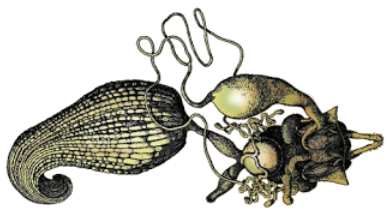

Horario
Lunes: 11:00 a 12:30
Miércoles: 12:30 a 15:00
Horario
Lunes: 11:00 a 12:30
Miércoles: 12:30 a 15:00
Tema 12. Órganos internos de reproducción

• Órganos genitales masculinos internos
• Órganos genitales femeninos internos
Capítulo 19. Órganos internos de reproducción (texto)
Presentación. Genitales internos
Lecturas complementarias:
• Bonhag, P.F. 1958. Ovarian structure and vitellogenesis.
• Valdez J.M. 2001. Ultrastructure of the testis of the mexican fruit fly.
• Órganos de reproduccion. Revisión bibliográfica por Adriana Acevedo (2019).
Tema 13. Órganos genitales externos

• Interpretación de genitalia masculina
• Tisanuros, Efemerópteros
• Dermápteros, Grilloblatodeos
• Coleópteros, Lepidópteros
• Dípteros, Himenópteros
• Morfología del ovipositor
• Ovipositor de tisanuros y grilloblatodeos
• Ortópteros Ensifera y Caelifera
• Ovipositor de Hemíptera e Hymenoptera
• Oviscapto de Diptera
Capítulo 20. Órganos genitales masculinos externos (texto)
Capítulo 21. Órganos genitales femeninos externos (texto)
Presentación. Órganos genitales externos
Lecturas complementarias:
• Genitalia. Revisión bibliográfica por Omar Hernández (2019).
Calendario de actividades 2021
11 y 13 de enero. Huevo y desarrollo embrionario.
18 y 20 de enero. Integumento, segmentación y apéndices.
25 y 27 de enero. Las extremidades cefálicas.
1 y 3 de febrero. La cabeza.
8 y 10 de febrero. El tórax y las alas.
15 y 17 de febrero. El abdomen y sus apéndices.
22 y 24 de febrero. Órganos de ingestión de ortópteros, neurópteros, coleópteros e himenópteros.
1 y 3 de marzo. Órganos de ingestión de lepidópteros, dípteros, hemípteros y homópteros.
8 y 10 de marzo. Aparatos digestivo y excretor.
15 y 17 de marzo. Aparatos circulatorio y respiratorio.
22 y 24 de marzo. El sistema nervioso.
29 y 31 de marzo. Los órganos de los sentidos.
5 y 7 de abril. Órganos reproductores internos.
12 y 14 de abril. Órganos genitales externos.
19 y 21 de abril. Evaluación del curso.
••• Inicio del curso ••• Tema 1. Huevo y embriología ••• Tema 2. Integumento, segmentación y apéndices ••• Tema 3. Las extremidades cefálicas ••• Tema 4. La Cabeza ••• Tema 5. El tórax y las alas ••• Tema 6. El abdomen y sus apéndices ••• Tema 7. Órganos de ingestión ••• Tema 8. Aparatos digestivo y excretor ••• Tema 9. Aparatos circulatorio y respiratorio ••• Tema 10. El sistema nervioso ••• Tema 11. Órganos de los sentidos •••